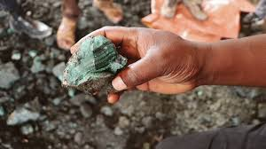
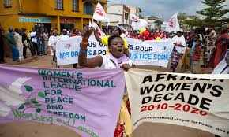

Violence Against Civilians
The genocide has resulted in mass killings, sexual violence, and forced displacement of millions of civilians, especially in the eastern provinces of Congo.

Conflict Over Minerals
Congo is rich in minerals like cobalt and coltan, which are essential for modern electronics, fueling brutal conflicts over control of mining operations.

Ethnic Tensions
Longstanding ethnic divisions have been exploited by militias and rebel groups, exacerbating violence and deepening the humanitarian crisis.